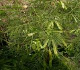
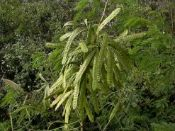
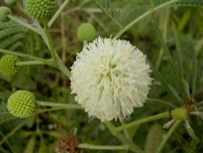

35.銀合歡
含羞草科原產中美洲，由荷蘭人在三百多年前引進台灣，葉可為牲畜飼料，木材可供燃燒，根則固結土壤改量肥沃度的功能。常綠或落葉小喬木。二回羽狀複葉，羽片5-8片，小葉12- 20對，長約1.2cm，寬約0.4cm。頭花白色，小花約200餘落葉小喬木，葉互生，為二回偶數羽狀複葉，小羽葉４∼８對，小葉１０∼２０對，小葉線狀橢圓形，葉背粉白，第一對羽葉間的葉柄上常具腺體。花白色，密生成球狀的頭狀花序，莢果線形，扁平，漸尖，長１２∼１８㎝。原產南美，樹性強健，繁殖容易，為熱帶地區第一期荒地造林不可缺少之樹種，且為沿海良好之防風防砂輔助樹種，木材可為薪炭材，枝葉、種子可供作飼料。 |
||
|  |  |  |